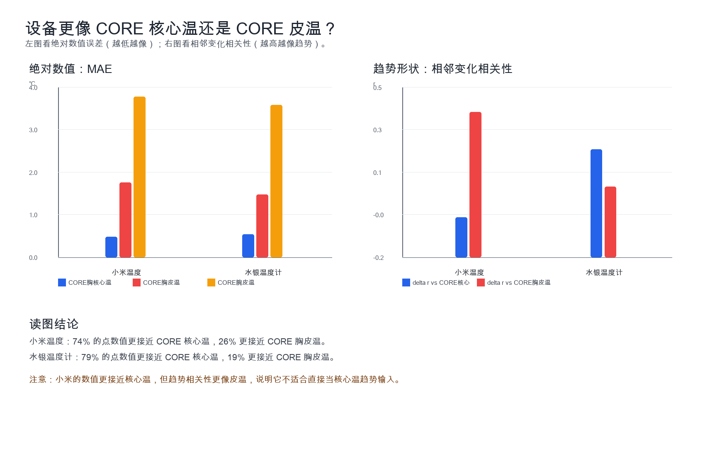
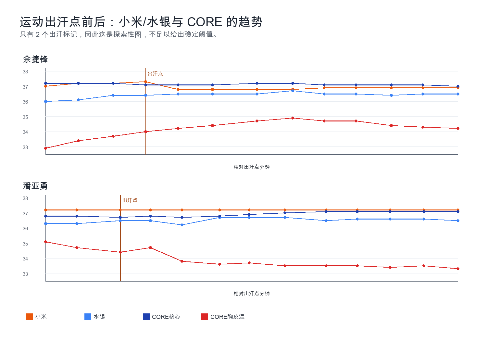
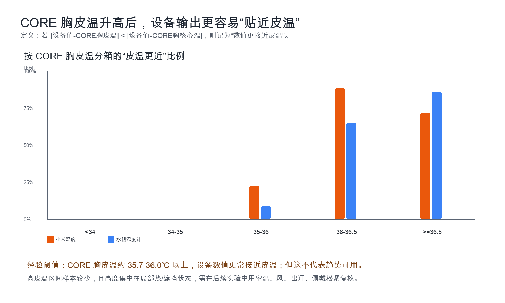

运动热负荷 / 中暑风险
关注核心温上升、大趋势、热区间和 DPG 高位。绝对值可以有一定偏差，但方向、连续性和高温风险不能错。
核心温
皮温
DPG
基于本地实验数据 + 用户提供的 The Quantified Scientist 内容摘要整理，未联网核验外部视频。
运动热负荷、入睡拐点、昼夜节律、夜间恢复和女性周期，对温度的误差、连续性、趋势一致性要求完全不同。 本页把用户真实需求、CORE 1/2 能力、直肠胶囊金标、水银温度计与小米实测放在同一张产品判断框架里。
Use Cases
核心温适合判断体内热状态与节律；皮温更敏感于散热、环境和佩戴；DPG（核心温 - 皮肤温差）把两者组合起来，更接近状态识别特征。
关注核心温上升、大趋势、热区间和 DPG 高位。绝对值可以有一定偏差，但方向、连续性和高温风险不能错。
关注 Hammock 曲线开端：核心温从慢降转为陡降，皮温上升，DPG 快速下降。更看重 20-30 分钟窗口的拐点。
关注跨夜和多日基线。需要低噪声趋势、稳定个人偏差、足够连续的采样，不能只靠单日零散点测。
目标信号常在 0.2-0.5℃ 量级。设备误差、个体偏差和环境干扰如果同量级，就不适合作为独立主输入。
Algorithm Gates
误差门槛不是统一标准。越依赖微小波动和跨日比较，越需要稳定基线、低 MAE 和高趋势一致性。
怎么读：条形越短表示对绝对误差越苛刻；“趋势优先”表示绝对偏差可校准，但方向、斜率和拐点必须稳定。 产品含义：小米当前 0.47℃ MAE 已接近或超过女性周期与恢复类信号量级，不能作为独立主输入。
User Needs
整理自你提供的运动、睡眠、健康与特殊场景需求。这里把用户问题、所需温度信号和最低产品能力拆开。
想知道“我是不是真的热到极限了”，并在高温高湿环境下控制强度、防中暑。
想用核心温下降、皮温上升和 DPG 下降判断入睡时段、深睡稳定期和醒前回升。
想知道体温节律是否前移或后移，用来辅助作息调整，而不是只看主观困意。
需要安全监测，关注高温、热疲劳和过热预警；环境风、湿度、衣物都必须作为干扰项记录。
需要连续、无创、低噪声的多日温度趋势。单次测量误差若接近 0.5℃，就难以支撑周期判断。
排斥侵入式测量，但需要比额温、耳温、手表皮温更连续、更可解释的体温趋势。
DPG + Hammock
根据你提供的博主摘要：睡眠期间核心温呈先降后升的吊床曲线，皮温常呈相反趋势，DPG 快速下降可辅助识别入睡。
怎么读：入睡不是看某一个温度点，而是看核心温下降斜率、皮温上升和 DPG 下降是否同时出现。产品含义：设备必须同时支持核心温、皮温和稳定趋势，才有机会做入睡/深睡算法。
Device Capability
评分是产品内部可读的相对能力矩阵，不是官方规格。CORE 2 相关内容来自你提供的博主摘要；小米、水银、CORE 1 数据来自本地实验。
| 设备 | 当前能做到什么 | 主要限制 | 适合承担的角色 |
|---|---|---|---|
| 直肠胶囊 | 真实核心温金标，可对 CORE 1/2 做趋势和绝对值校验。 | 侵入、不适合长期日常佩戴，无法代表消费级体验。 | 实验金标。 |
| CORE 1 | 本实验伪金标；可输出核心温估计、皮温和 DPG；运动/睡眠大趋势可用。 | 日常微小波动、低动态场景稳定性有限；不是直肠胶囊级真实金标。 | 当前实验参照与连续温度研究工具。 |
| CORE 2 | 按用户提供摘要，低波动日常更稳、入睡下降斜率更接近胶囊、拐点更清晰。 | 仍需更多真实数据；日常 1℃内微波动仍是难题。 | 更适合全天连续监测和睡眠/DPG 算法探索。 |
| 水银温度计 | 本数据 MAE 0.54℃，Pearson r 0.56；排序/趋势比小米更像 CORE 核心温。 | 只能单点测量，系统性低估，不能做连续算法输入。 | 离散校验点与粗略参考。 |
| 小米温度 | 本数据 MAE 0.47℃，RMSE 0.60℃，±0.3℃内 45%。 | 趋势同向率不足，个体和衣着/遮挡干扰明显。 | 低权重辅助信号，不宜独立承担核心算法输入。 |
Xiaomi Test
以下统计全部来自你原始实验数据与校正后的 `Time_Corrected`。结论只代表当前 4 人、107 点样本，不外推到全人群。
相对 CORE 1 胸核心温估计；RMSE 0.60℃。
对经期、恢复等微小趋势任务偏弱。
CORE 有变化时，小米同向比例约 21%。
CORE胸皮温 36-36.5℃ 时，数值更接近皮温。
只做探索性观察，不建立通用阈值。


Threshold
总体 74% 的小米点更接近核心温；但当 CORE 胸皮温升到约 35.7-36.0℃ 以上时，设备读数更容易落到皮温附近。这是条件结论，不是总体结论。

Decision
把“温度值是否接近”转成“能不能用于算法输入”。小米当前可以进入特征池，但不应是主导判断。
| 未来输入 | 需要的能力 | 当前小米判断 | 原因 |
|---|---|---|---|
| 女性经期 / 月周期 | 0.2-0.5℃ 级别多日趋势，稳定个人基线。 | 不建议独立使用 | 小米总体 MAE 0.47℃；女性受试者 MAE 0.80℃，误差接近或超过目标信号。 |
| 夜间恢复 / 多日绝对差 | 跨夜可比、偏差稳定、异常状态可剔除。 | 当前不建议 | 一致性界限宽，24 小时生活趋势下 delta MAE 0.31℃。 |
| 昼夜节律 | 连续多日核心温趋势，方向和相位稳定。 | 不建议作为主输入 | CORE 变化时小米同向率约 21%，难以支撑主判断。 |
| 入睡阶段识别 | 20-30 分钟窗口内拐点、斜率、DPG 下降。 | 可作为辅助 | 若没有可靠皮温/DPG和连续趋势，仅靠小米单点温度不够。 |
| 运动热负荷 | 核心温上升趋势、皮温散热、热区间预警。 | 谨慎辅助 | 绝对误差未必最大，但运动段平台化明显，需结合心率/运动/环境。 |
连续 14-28 天夜间固定窗口；记录室温、湿度、风、衣着、佩戴松紧、摘戴、洗澡、运动和出汗。
先做个人基线；运动、出汗、通勤、皮温高、快速变化时降权；避免用单点变化判断核心温趋势。
CORE 1 是本实验伪金标，不是直肠胶囊真实金标；小米结论仅限当前 4 人、107 点数据。